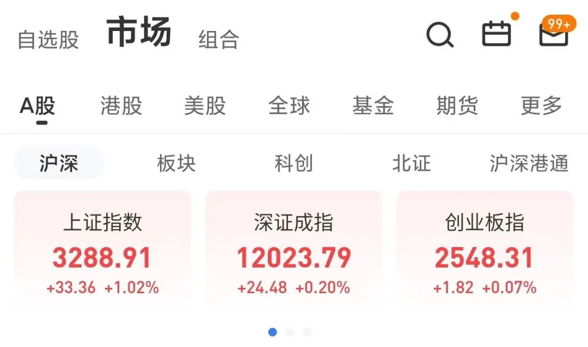
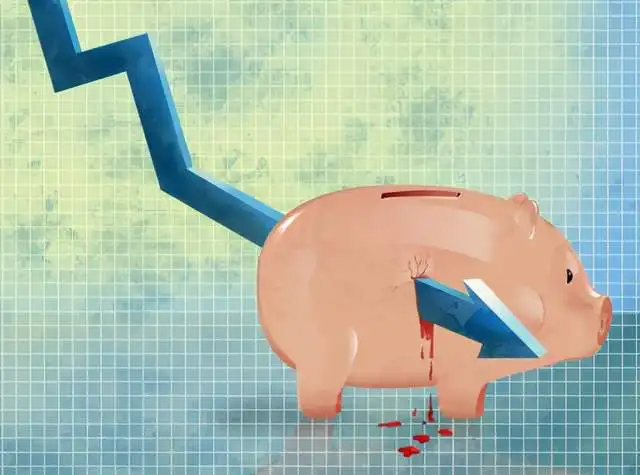

风格会不会切换呢？
原创 V姐万事屋 V姐来了 2022-06-14 20:38 发表于上海
原文链接(长) 原文链接(短)
昨晚的美股是这样的，血流成河：
今天A股上午一副要随美股去了的架势，结果下午走了大V，上午跑掉的朋友，下午收盘时只想骂狗庄阴险。

有人说今天堪称我A股独立日。
现在说独立为时尚早，只能说国家队护盘了。今天市场个股的中位数是跌了0.22%，快速拉起指数的是券商，石油，银行等，这些板块显然不是游资和散户能拉起来的。
国家队护盘不新鲜，但是他们为啥这时候进来拉权重呢？
A、气美国，打他们脸
B、风格有可能要切换
大家知道，这轮反弹，以比亚迪为代表的新能源动力板块，涨幅惊人，比亚迪本迪涨了67%。
新能源长期看肯定是好的，眼睛不瞎都能看到光明的未来。所以资金短期不知道买什么的时候，怼它是合理的。
如果房子今年死活都起不来，新能源还会有行情。
近期新能源最大的利空，是楼市。
楼市起来，行情会转到基建，房企，大金融等板块。
昨天南京放开了非户籍人员的购房，补缴6个月，都能买。
跟5月20号的一日游政策不同，直到现在，还没有辟谣跟撤回。
南京的能级，基本仅次于一线城市和杭州，如果它这么执行，后续其他城市都可以效仿，等于除了一线城市外，所有城市都不再对外地人限购。
既然所有强二线可以这么搞，那么一线呢？
底线就是一步一步试探出来的，市场起来，也是政策一步一步累积的效果。
5月社融2.79万亿，比上年同期多8399亿，超预期7900亿。当然结构一般，中长期贷款偏少，但是至少说明没有放不出去的水。
想放总能放，放不出就叠buff，直到放出去为止。
大聪明总是用自己的逻辑来解释资产价格和泡沫。
我一年10万，不吃不喝30年也买不起房，所以泡沫太大了，价格必须跌！
可是经济的发展，或者说危机的过度，就是用一个又一个泡沫去争取时间。
哪个泡沫最管用，就用哪个。既能扩张信用，又能存储超发货币的，就是好泡沫。
如果美股持续下跌，影响A股最大的变量就是北向资金。
北向的审美明显是偏价值的龙头白马，茅茅们起来，或许就不会让赛道股一枝独秀了。
最近猪肉周期要起来的呼声又高了，但是我个人认为上海疫情前，或许还有可能，现在没可能了。
目前生猪存栏量还是在4亿头以上，数量过剩。牧原、温氏22年1季度财报显示，产能还是处于收缩阶段。
也就是说产能出清还没有结束。
一般来说，要产能出清，小玩家都死掉，猪肉价格回升，活下来的猪企才能盈利，开启下一轮猪周期。
现在这个情况，我们放水，上游大宗原材料暴涨，工业品通胀几乎是必然的。我们要控制CPI，还有比控制猪肉价格更好的办法嘛？
所以政策上一定会扶持中小猪企，不会让产能这么快出清的。
猪周期的逻辑就没有了。

（_做一只符合社会主义经济规律的好猪）_
6月的股市，赚钱应该不难。
难的是后面的三季度，中报可能暴雷，风格有可能切换。
我们的市场，从来不是一个看公司质地就能做好投资的市场。屁股，还是要跟庄家坐在一起。